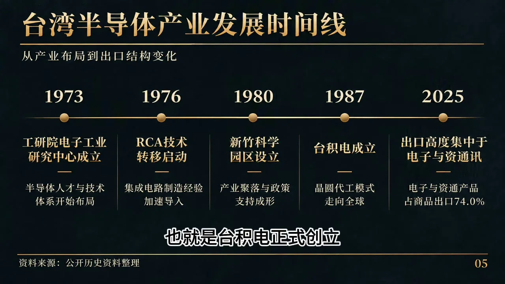
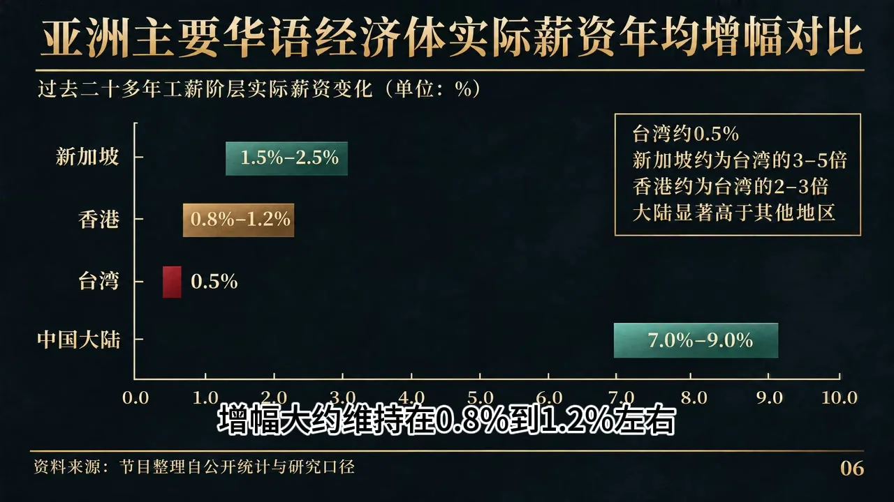
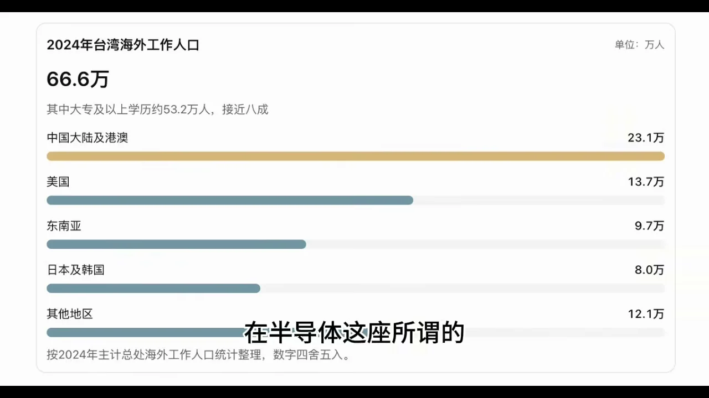
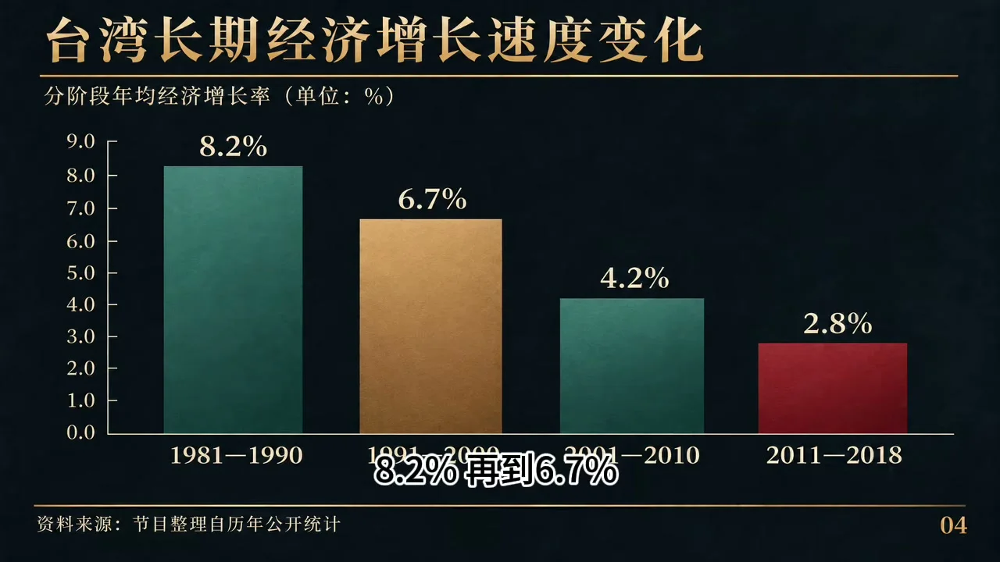
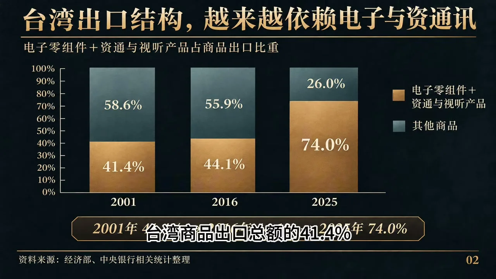
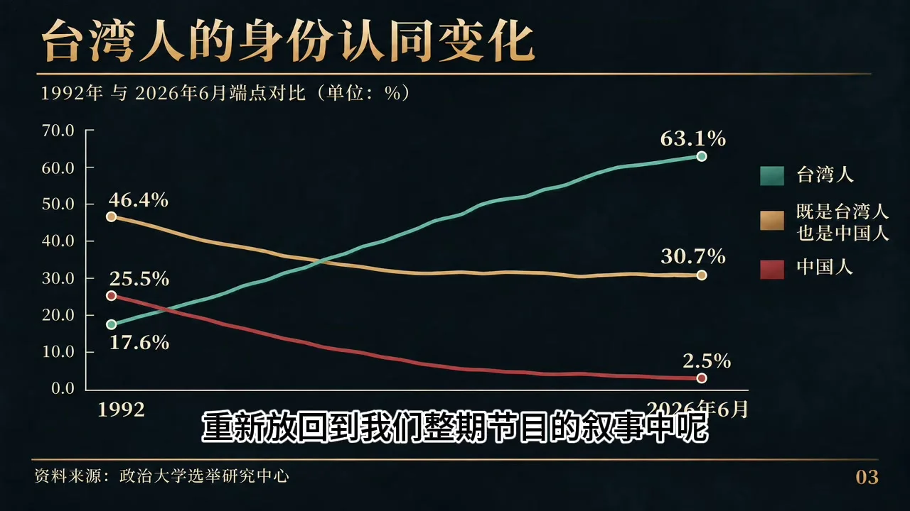

2026 年 11 月，台北市长选战进入白热化：民进党候选人沈伯洋（黑熊学院创办人）从 5 月民调落后蒋万安 28 个百分点，到 10 月被部分民调画出「反超 17 个百分点」的曲线，成为岛内流量与争议的双重焦点。频道「再快一点」以此为引子，用 72 分钟回答一个问题：一个实行了几十年一人一票、经历多次政党轮替的社会，为什么至今仍围绕政治身份、历史认同与意识形态激烈争斗？视频把这场 40 年的实验称为一份需要用数据检验的「体检单」。本报告基于原片全文转写整理，观点归属原片及其引用的公开资料。
原片开场用近 4 分钟铺陈沈伯洋的「造神」盛况：演艺界大咖断腕站台、风雨中的造势人海、街头的巨幅海报；王伟忠专访播放量破 460 万，李四端对谈一天点击 90 万，赵少康「少康战情室」创下 14.4 万人同时在线的纪录。部分民调曲线被描绘成从 30% 到 50.3% 的「史诗逆转」（原片也承认其他民调仍显示蒋万安领先）。
原片的分析重点不在沈伯洋本人，而在于他让三种诞生于不同时期的机制在同一个人身上交汇：传统地方政治的利益网络（派系、桩脚与资源分配）、民主化之后的政党与身份竞争（统独与忠诚测试压倒政策讨论）、互联网时代的注意力经济（争议即流量，流量即曝光）。支持者视其为「安全与身份的代表」，反对者将其当作批评靶心，平台则从情绪传播中获利——观看不等于支持，但争议一定等于流量。
视频首先纠正一个常见预设：1980 年代的台湾并非等待新体制拯救的凋敝社会。经过数十年工业化，台湾已建立起从纺织、石化、钢铁造船到电子电机的完整制造业体系——1970 年代蒋经国主导「十大建设」，1980 年新竹科学工业园区成立，1987 年台积电创立。半导体产业的技术积累、人才培养与产业组织基础，在蒋经国去世之前就已经建立。台湾与韩国、新加坡、香港并称「亚洲四小龙」。
那么问题来了：既然经济成果显著，为什么政治制度在 1980 年代开始重大转变？为什么长期戒严的国民党政权逐步开放政治参与？视频认为答案的一头在台北，另一头在太平洋对岸——甚至在一万公里外的伦敦。
1982 年 6 月 8 日，里根在英国议会威斯敏斯特宫发表演讲，提出一个关键概念：「民主的基础设施」——不是公路铁路港口，而是一个国家内部的自由媒体、工会、政党、大学等政治组织与社会团体。里根主张美国应当联合两党、工商界、劳工组织与国会，参与「正在世界范围内发展的民主运动」。1983 年，根据美国国会立法框架设立、接受国会拨款的国家民主基金会（NED）正式成立——不再靠 CIA 直接颠覆，而是通过资助社会组织、媒体与公共事务项目「支持世界各地的民主发展」。
视频给出一个历史细节：1970 年代卡特政府已经把「自由人权」提上外交议程（那时「民主」还是苏联的话语），里根时代的质变在于把「民主」与「自由」并列并组织化、制度化，使之成为冷战后期美国对外政策中明确的一项工具。
1949 年后的几十年，美国在西太平洋需要一个「稳定、反共、执行力强」的台湾，民主原则让位于冷战战略。转折发生在 1970 年代：1972 年尼克松访华，1979 年中美建交，美台「共同防御条约」终止，但美国国会以国内法形式通过《与台湾关系法》，安全关系维持、外交关系改变——一个特殊局面由此形成。维持强权台湾的代价上升后，美国国会开始系统性地对台北施加政治改革压力：
外部压力之外，蒋经国面对的是一个内在已经变了的社会：工业化带来城市人口与受教育群体，中产阶级扩大；老兵凋零使本省人的军警统治机制越来越难维持；党外运动蓬勃发展；国民党内部改革与保守两派对立。更关键的是接班问题——继续戒严没有强人压不住必生乱，直接改革又怕国民党「玩完」。
1985 年 12 月 25 日，蒋经国公开表态：下一任总统依宪法产生、蒋家后人不能也不会竞选总统、不再军事统治。1986 年 9 月 28 日，党外人士在台北圆山大饭店宣布成立民主进步党——当时党禁并未解除，按制度国民党完全可以取缔，但蒋经国选择了默认。1986 年 10 月 7 日，蒋经国在总统府接受《华盛顿邮报》发行人凯瑟琳·格雷厄姆采访，宣布将在制定国家安全法律后解除戒严、开放组党——现场翻译正是后来的台湾地区领导人马英九。
原片对这段历史给出两层解读：主流叙事是蒋经国「决心推动改革、对反对派网开一面」；另一种政治解释则认为这可能是主动调整竞争规则的战略安排——先在体制内制造多党竞争，保证竞争始终是「既得利益群体内部的竞争」。顺着这个逻辑，原片抛出一个更具争议的判断：反攻大陆失去现实可能、被赶出联合国之后，国民党的合法性根基动摇，唯有本土化才能获得本土选民支持、避免被统一——「所以很多研究人员认为，真正的台独教父是蒋经国」。三句话的听众也被逐一拆解：「遵守宪法」说给本土势力，「反对共产主义」说给美国，「不得推动台独」说给国民党老兵与北京。
1987 年 7 月 15 日，台湾正式解除持续 38 年的戒严。1988 年 1 月 13 日，蒋经国在台北去世，享年 77 岁。从里根演讲到解严，只有短短五年——这不是单一力量完成的改革，而是美国降成本的战略诉求、岛内党外运动、国民党利益计算与两岸统一意志之间复杂的博弈结果。
蒋经国留下两份截然不同的遗产。一份是历经数十年积累的工业根基与技术底盘：1974 年工业技术研究院电子工业研究所成立，1976 年从 RCA 引进集成电路制造技术，1980 年联华电子成立、新竹科学园区挂牌，1985 年李国鼎力邀张忠谋返台出任工研院院长，1987 年台积电正式创立——「政府主导产业政策、技术官僚统筹协调、公立科研机构攻坚核心技术、民间企业承接商业转化」。
原片对近年「张忠谋一己之力托起台湾芯片帝国」的叙事提出系统性质疑：台积电的工艺底座与技术团队完全脱胎于工研院十余年动用公帑建立的研发资产，核心技术准入与特许授权是当年蒋经国政府从美国争取来的，初始资金极度缺乏时是李国鼎亲自游说荷兰飞利浦注资、说服王永庆等岛内巨头入股。在战略规划、底层技术获取、资本统筹三大决定企业生死的环节上，张忠谋更像是「国家力量搭好温室后被请进来负责战术推进的高级职业经理人」。

1980 年代末起，大陆改革开放承接了台湾劳动密集型产业的大规模转移，台商确实赚到大钱、企业越做越大——但资本长腿，普通工人跑不了。原片引用一组对比：1981–1997 年，台湾劳动生产率年均增长 5.5%、实质薪资年均增长 5.8%，蛋糕做大普通人跟着涨；1998–2023 年，生产率年均仍增 2.3%，实质薪资年均只增 0.5%。横向对比同梯队经济体：新加坡普通雇员实际薪资中位数年均增长 1.5–2.5%（台湾的 3–5 倍，且组屋与公积金把住房成本摁在合理区间）；香港约 0.8–1.2%；大陆城镇单位实际平均工资在 WTO 后 20 年长期保持 7–9%。「战面上 GDP 平稳上行、护岛神山风头无量，但全岛工薪阶层实际购买力被按在每年 0.5% 的地平线上」——这就是利益空心化。

80 到 90 年代中期，台湾曾以全岛之力吸引 4 万多海外高层次人才回流；进入 2000 年代后风向逆转——大陆科技互联网与内需市场爆发、美国领跑全球科研与资本，本土市场仅 2300 万人口的台湾，除半导体外其他行业天花板太低。原片引用台湾官方统计：2024 年海外工作人口 66.6 万，其中大专及以上学历约 53.2 万人（接近八成）；流向分布为中国大陆及港澳 23.1 万、美国 13.7 万、东南亚 9.7 万、日韩 8.0 万。大陆互联网大厂硬件新人月薪约 2.5 万元人民币、按 16 个月计折合近 200 万新台币，对月薪卡在 3 万新台币的台湾年轻人诱惑直接而现实。「网络上的政治口号喊得再响，年轻人在现实中用脚投票是另一回事。」

从 1997 年《认识台湾》教科书到「108 课纲」把中国史拆解并入东亚史，表面是改教材，背后是「我们到底是谁」的政治较量。吊诡的是：政治上天天「去中国化」，日常生活中大家依然讲闽南语与国语、写繁体汉字、过端午中秋除夕、拜妈祖关公——政治认同与生活文化的剧烈撕裂，使社会文化共识极其脆弱；本土市场小又逢少子化，文化产品长期受好莱坞、日韩与大陆短视频挤压。三种空心化叠加：经济利益分配不均、人才流向外部、文化认同陷入分裂——一个社会还能靠什么凝聚跨越党派的长期共识？
原片引用台湾主计总处长期数据：1981–1990 年均增长 8.2%，1991–2000 年降至 6.7%，2001–2010 年降至 4.2%，2011–2018 年仅剩 2.8%。2025 年增速一举冲到 8.68%（本页已核对主计总处官方初步统计，为近 15 年新高，主要由 AI 硬件算力狂潮拉动）——但原片提醒要拨开光环看结构：这轮爆发几乎全靠高端半导体与 AI 服务器卡住全球产业链关键生态位，而这条产业路线的核心在蒋经国时代就已确立。反弹证明的是旧路线的商业成功，不是新产业的培育成功。

电子零组件与资通讯、视听产品两大类占台湾商品出口总额的比例：2001 年 41.4% → 2016 年 44.1% → 2025 年 74%。每出口 100 美元约 74 美元来自电子与资通讯产品。好处是 AI 浪潮下迅速受益；代价是整个经济体对全球科技周期、主要客户投资、国际贸易政策的敏感程度同步提高。「机械、石化、金融、医疗、设计以及大量中小企业——这些当年多元的产业底盘还在吗？」

政治大学选举研究中心 1992–2026 年追踪调查（本页已核对政大官方趋势资料）：自认为「台湾人」的比例从 1992 年 6 月的 17.6% 升至 2026 年 6 月的 63.1%；「既是台湾人也是中国人」从 46.4% 降至 30.7%；单一「中国人」认同从 25.5% 降至 2.5%。这不是一次民调的突变，而是一条持续 30 多年、由选票动员与政治工程深度操盘的系统性重构曲线。

| 指标 | 起点 | 终点 | 变化 |
|---|---|---|---|
| 实质薪资年均增长（1981–97 → 1998–2023） | 5.8% | 0.5% | 与生产率增长（2.3%）脱节 |
| 海外工作人口（2024，大专以上 53.2 万、近八成） | — | 66.6 万人 | 大陆港澳 23.1 万、美国 13.7 万 |
| 经济年均增速（十年段） | 8.2%（1981–90） | 2.8%（2011–18）/ 8.68%（2025） | 长期放缓 + AI 单点反弹 |
| 电子+资通讯占出口比重 | 41.4%（2001） | 74%（2025） | 单一赛道集中 |
| 「台湾人」身份认同（政大） | 17.6%（1992.6） | 63.1%（2026.6） | 34 年 +45.5 pp |
视频最具争议的部分，是把台湾民主化后的文化工程与 1966 年大陆文革并置对比。原片承认这很有争议，但坚持「破四旧」（旧思想、旧文化、旧风俗、旧习惯）与台湾的去蒋化、去中化高度相似：要建立新的政治秩序，就要改变人们对过去的认知——重新评价历史人物、重新定义传统文化，原本属于文化生活的问题被赋予鲜明的政治立场。「台湾的网络语境里，网民自任『语言警察』抓说『大陆话』的人；『台湾』被绑定民主自由先进高贵，『中国』被绑定独裁落后低贱」——原片认为这种系统性的文化割裂与语言猎巫，比砸掉物理器物的破四旧「渗透得更深，直接改造下一代的历史教育」。
第二个对照是个人崇拜标准。原片梳理：文革后中共花了 40 年反个人崇拜——1980 年中央发文少宣传个人、1982 年十二大党章明文禁止任何形式的个人崇拜，2016 年前后官方媒体停用「习大大」称呼、贵州地方悬挂画像的报道被删除；如今大陆街头基本看不到政治人物画像。反观台湾：政治人物海报遍布街头、支持者制作周边组织造势、媒体追逐个人故事，「说空话叫有逻辑，少年殴打同学叫有勇气，普通长相可以被千遍宣传成帅哥」——当一个政治人物被塑造成某种身份的化身、对个人的批评被解释成对整个阵营的攻击时，「台湾人是不是也应该警惕类似的政治神圣化机制」？判断标准不应随制度与立场而改变。
面对「台湾看起来日子过得挺滋润」的质疑，原片用「社会容错率」作答：1966 年的大陆是被美苏围堵、家底贫弱的农业社会，任何政治风暴都会直接砸到普通人生活；而台湾开启政治狂欢的前提，是数十年冷战红利、国民党带去的黄金与人才、美国援助、日本产业转移红利，以及高壁垒的半导体产业——是在极其厚实的财富积累之上开始漫长的政治内耗的。财富积累是「两蒋」留下的，政治内耗是其后开始的。就像家底极厚的富豪子弟摔锅摔碗不务正业，靠老辈存款和分红仍可锦衣玉食多年；台积电先进制程与 AI 算力狂潮仍能烘托出战面数据的热火烹油。但「财富可以当止痛药，却治不好病根」——AI 硬件狂欢终有见顶退潮之日，老一辈工业遗产被消耗殆尽时，靠政治口号和街头狂热，喊不出下一个台积电。